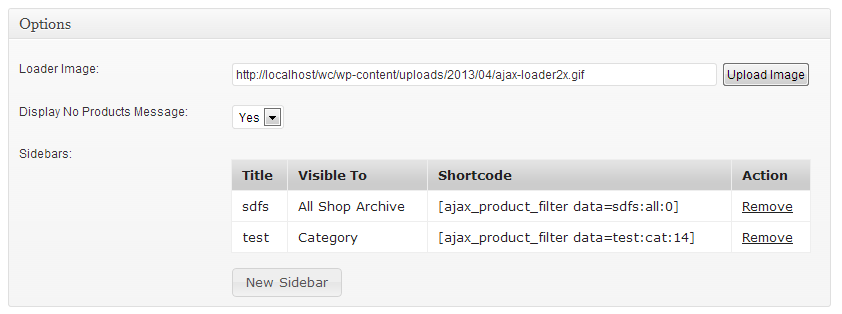

Woocommerce AJAX Product Filter
Advanced Woocommerce product filtering by category, attribute, meta
- Created: 12/04/2013
- latest Update: 09/07/2013
- By: Farhad Ahmadi
- Email: ahm.farhad@gmail.com
WooCommerce AJAX Product Filter (or WooCommerce AJAX Layered Navigation) adds advanced product filtering to your WooCommerce shop. It provides rich Interface for users to filter products by custom attributes, hierarchical categories and custom post meta fields at realtime.
You can build your own store advanced filters with drag and drop in a minute. There is no limit on the number of filters you add to shop; so customers can filter products by nested categories, price, dimension, size, color, weight, rate, sales count,... unlimited more product attributes in three types of UI: Slider, Drop Down and checkbox list. Filters can even be applied on product search results. So you can search and apply filters on your products results.
Filter results are loaded via AJAX at realtime but don't worry about SEO Woo AJAX Product Filter uses HTML5 PushState and for old browsers HashTag fallback.
This plugin is best for stores with a lot of products and items or multiple product attributes.Thank you for purchasing my plugin. If you have any questions that are beyond the scope of this help file, please feel free to contact. Thanks so much!
Features
- Add Unlimited Filters: There is no limitation, let the customers filter all the way through their needs.
- Three Types of UI: Slider, Drop Down & Checkbox (Toggle effect).
- Reset All Filters: Users can reset all filters to default by a single click.
- Merge Sidebars: Merge sidebars to save space of shop sidebar.
- Filter by Color, Pattern and Image: Assign an image for each attribute so users can see image instead of text for products filtering.
- Search Engine Optimized (SEO friendly): Filtered products are indexable and users can share links of filtered results.
- HTML5 PushState & HTML4 HashTag Fallback: Best experience in modern browsers beside supporting old browsers.
- Cross Browser Compatibility: AJAX loading, PushState,... has been test with all major browsers old versions to latest versions.
- Unlimited Filter for Specific Attributes archive/Categories archive: If you sell different products with different attributes this feature is for you. By using this feature selected categories or selected attributes can have their own filters without affecting the rest of the shop.
- Sidebar, Shortcode and PHP function generator
- AJAX Loading Results: Users can see filtered results at real time.
- Sort by AJAX: Sort and change order of products by 6 parameters and see results at real time.
- Drag and Drop Filter Building: Shop admin can drag and drop unlimited widgets and build filters in a minute, each widget with its own different settings.
- Auto Blends With Shop Theme: Automatically adapts with your shop theme styling so you need no styling.
- Hierarchical Category Navigation: Users can navigate through hierarchical categories; eg: Clothing > Women > Outwear > Jacket.
- Multiple Categories/Attributes Filtering: Users can filter product by selecting multiple categories and multiple attributes at the same time (Supports "AND", "OR" Parameters)
- Built with WordPress Best Practices If a task has multiple approaches the best one is selected. E.g: Product Filtering functionality only activates at WooCommerce area not everywhere, this makes the plugin fast and small footprint.
Installation
- Unzip the downloaded file from CodeCanyon, This file contains the actual plugin: woocommerce-product-filter-plugin.zip
- Open wordpress administration area and choose from plugins menu "Add New"
- In the Add New Plugin section click on upload
- In the upload section browse for woocommerce-product-filter-plugin.zip and click on "Install Now" button:
- Wait to complete plugin installation, then click Activate Plugin

Widgets
After installation, widgets are ready to use. "Woocommerce AJAX Product Filter" installs 8 widgets:
-
Product Filter by Attribute:
By using this widget you can filter products by attributes. Each shop has its own different attributes, WooCommerce products attributes are listed in:
WordPress admin > Products > Attributes
-
Product Filter by Image Attribute:
By using this widget you can filter products by images instead of text. If you want to filter by color just create a small image filled with color and use this widget., WooCommerce products attributes are listed in:
WordPress admin > Products > Attributes -
Product Filter by Category:
By using this widget you can filter products by categories. Each shop has its own different categories and sub-categories, WooCommerce products categories are listed in:
WordPress admin > Products > Categories
-
Product Filter by Multipe Categories:
By using this widget you can filter products by multiple categories the same time (Non Hierarchical). WooCommerce products categories are listed in:
WordPress admin > Products > Categories -
Product Filter by Meta:
By using this widget you can filter products by WordPress post meta. Currently supported self-explanatory metas are:- Rate
- Price
- Weight
- Total Sales
- Length
- Width
- Height
-
Product Filter by Custom Meta:
WooCommerce Product Filter by Custom Meta. By using this widget you can filter products by non-native WooCommerce product meta.
It supports range slider UI. You need to enter the custom meta name into widget options. -
Product Filter Reset Button:
As the name indicates, this widget enables users to reset all filters with a click. -
Product Filter Order:
By using this widget you can change products order by multiple values (using AJAX).
Widgets Options
Widgets have some common settings:
-
Display Type: Select the type of user interface for the filters. There are three types of UI available:
- Slider: Lets you narrow down the list of shown products by selecting minimum and maximum amount.
- List: Lets you select one or more item to narrow down the list of shown products.
- Dropdown: Lets you select one item from a list to narrow down the list of shown products.
- Title: The main title for widget.
- Sub Title: The title used for current filter.
-
Query Type: Defines how multiple selections are mixed.
- AND: If a user selects two or more attributes, only products with match both attributes will be returned.
- OR: If a user selects two or more attributes, products which match either attribute will be returned.
-
Range Template: In slider filter, this template is used to display minimum, maximum range of selected amounts
- %s means selected minimum value
- %e means selected maximum value
- Step: In slider filter, determines the size or amount of each interval or step the slider takes between the min and max
-
Widget open/close: To save some space between filters you can control opening and closing wisely. You can group filters by printing first opener and printing last closer.
- Print Widget Opener: Check this item to pring HTML code of widget opening.
- Print Widget Closer: Check this item to pring HTML code of widget closing.
- Minimum Value: The minimum value of the slider
- Maximum Value: The maximum value of the slider
-
Loader Image: Customize loading GIF animation.
-
Display No Products Message:: Some WooCommerce themes don't provide "No Products" action, Enabling this option fixes most of them.
-
Sidebars: By using this option you can generate unlimited sidebars and shortcodes. It's very useful tool if you want to:
- Get shortcodes or PHP functions.
- Use filters out of sidebar.
- Sell different items, with different attributes.
- Display certain filters at custom places of your shop.
By clicking New Sidebar options appears: - All Shop Archive: Dispalys sidebar in main shop archive, Shop tags and shop categories.
- Category: Dispalys sidebar only in shop categories, you can select multiple categories to dispaly in.
- Attribute: Dispalys sidebar only in shop attributes, you can select multiple or specific attributes to dispaly in.
-
Shortcode and PHP functions are generated by sidebar option
- Copy sidebar generated shortcodes and PHP functions and use it.
- Before AJAX request:
- AJAX request successfully completed:
- AJAX request failed: wcsl_ajax_fail
- An AJAX request fired(Always): wcsl_after_ajax
- Update custom theme areas: wcsl_on_update
options
To access options and configurations open WordPress administration area and choose from Settings menu "Product Filter"

New Sidebar let's you choose where sidebar (and it's filters) is displayed.
If you select no categories / no attributes sidebar is dispalyed in all categories / all attributes.
Shortcode and Function
A shortcode is a WordPress-specific code that lets you do things with very little effort.
The usage is pretty simple; put shortcode inside a post, page or..., the selected filters appears to users.
By installing this plugin you can use shortcode inside WordPress native "text widget".
To make shortcode and function work, you should go to WordPress admin > Appearance > Widgets page and add Filters to generated sidebars.
If you want to use shortcode at sidebar make sure that you put it at your theme sidebars not this plugin generated sidebars.
AJAX Callback
This section is for advanced users. If you don't know what is this section for or don't know what are you doing; Get help from a developer or freelancer or a friend.
Define a JavaScript function and name it wcsl_before_ajax E.G:
function wcsl_before_ajax(){
alert("ajax request is starting");
}
wcsl_before_ajax will be fired before every AJAX request. Note that wcsl_before_ajax function is going to be asynchronous.
Define a JavaScript function and name it wcsl_ajax_done E.G:
function wcsl_ajax_done(){
alert("successful request");
}
wcsl_ajax_done will be fired after a successful AJAX request.
Define a JavaScript function and name it wcsl_ajax_fail E.G:
function wcsl_ajax_fail(){
alert("request failed.");
}
wcsl_ajax_fail will be fired when AJAX request fails to complete.
Define a JavaScript function and name it wcsl_after_ajax E.G:
function wcsl_after_ajax(){
alert("after ajax request.");
}
wcsl_after_ajax will be fired after each AJAX request (done or fail).
Define a JavaScript function and name it wcsl_on_update E.G:
function wcsl_on_update(){
var my_areas = new Array();
my_areas[0] = "p.woocommerce-result-count";
return my_areas;
}
wcsl_on_update should return an array of jQuery selectors. Each array item is proccessed as a jQuery selector and will be updated on each AJAX request Another example: Some themes don't use WordPress pagination API and use their custom libraries so it's possible that pagination doesn't get updated on AJAX request:
function wcsl_on_update(){
var my_areas = new Array();
my_areas[0] = "div.woo-pagination";
return my_areas;
}
Possible usages:
- Scroll page to top after a successful AJAX request.
- Shorten products descriptions after a successful AJAX request.
- Pushing a track event to analytics website after an AJAX request.
- Hiding products' images loading indicator after a successful AJAX request.
- Stopping AJAX loading UI and displaying a message after a failed AJAX request.
- Update custom dynamic widget on each AJAX request.
- Update and fix missing parts of each refresh.
- ...
notes
- This plugin uses your WooCommerce installation templates to generate UI of filters, so filters are blended as a part of themes nicely.
- DropDown and Checkbox list filters use "WooCommerce Layered Nav" templates.
- Slider filters use "WooCommerce Price Filter" templates.
- To blend all filters to theme, don't group sliders with DropDowns and checkbox lists.
- I have tested this plugin with my archive available WooCommerce themes, but there may be cases which needs some additional styling. If you need help let me know.
- You can change any string or text that used in this plugin. Check this tutorial for more information.